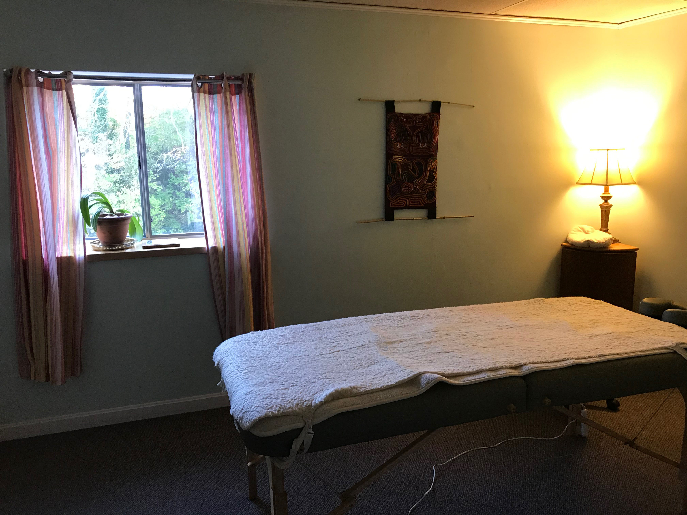

Fees & Services
Cost of Treatment
Those of us who are fortunate enough to live in financial security have seemingly unlimited choices and access to many services to support health and wellbeing. People with fewer resources, including lower income working people, those living with disability, recovering from substance use disorders, and experiencing mental health issues, may find themselves with fewer options for self-care. The latter group is the target population for Living Water Acupuncture on the Outer Cape. For this community:
- the cost of whole-body acupuncture treatment is set at the hourly minimum wage in Massachusetts, currently $12.00.
- NADA protocol (ear acupuncture) is available for $5.00 at the Orleans location.
- NADA protocol is free of charge at our Tuesday group clinic at The First Congregational Church of Wellfleet.
If scheduling permits, treatment offered for individuals outside our target population is available on a sliding-scale fee schedule.